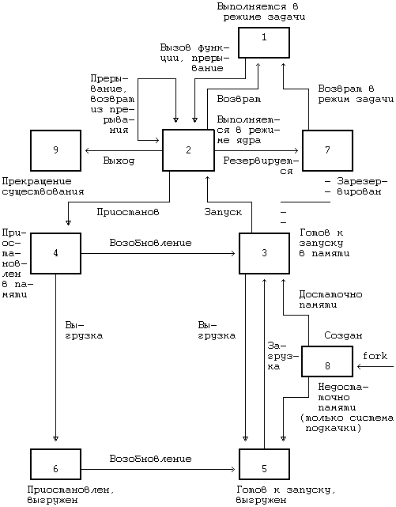

Как уже отмечалось в главе 2, время жизни процесса можно теоретически разбить на несколько состояний, описывающих процесс. Полный набор состояний процесса содержится в следующем перечне:
- Процесс выполняется в режиме задачи.
- Процесс выполняется в режиме ядра.
- Процесс не выполняется, но готов к запуску под управлением ядра.
- Процесс приостановлен и находится в оперативной памяти.
- Процесс готов к запуску, но программа подкачки (нулевой процесс) должна еще загрузить процесс в оперативную память, прежде чем он будет запущен под управлением ядра. Это состояние будет предметом обсуждения в главе 9 при рассмотрении системы подкачки.
- Процесс приостановлен и программа подкачки выгрузила его во внешнюю память, чтобы в оперативной памяти освободить место для других процессов.
- Процесс возвращен из привилегированного режима (режима ядра) в непривилегированный (режим задачи), ядро резервирует его и переключает контекст на другой процесс. Об отличии этого состояния от состояния 3 (готовность к запуску) пойдет речь ниже.
- Процесс вновь создан и находится в переходном состоянии; процесс существует, но не готов к выполнению, хотя и не приостановлен. Это состояние является начальным состоянием всех процессов, кроме нулевого.
- Процесс вызывает системную функцию exit и прекращает существование. Однако, после него осталась запись, содержащая код выхода, и некоторая хронометрическая статистика, собираемая родительским процессом. Это состояние является последним состоянием процесса.
Рисунок 6.1 представляет собой полную диаграмму переходов процесса из состояния в состояние. Рассмотрим с помощью модели переходов типичное поведение процесса. Ситуации, которые будут обсуждаться, несколько искусственны и процессы не всегда имеют дело с ними, но эти ситуации вполне применимы для иллюстрации различных переходов. Начальным состоянием модели является создание процесса родительским процессом с помощью системной функции fork; из этого состояния процесс неминуемо переходит в состояние готовности к запуску (3 или 5). Для простоты предположим, что процесс перешел в состояние "готовности к запуску в памяти" (3). Планировщик процессов в конечном счете выберет процесс для выполнения и процесс перейдет в состояние "выполнения в режиме ядра", где доиграет до конца роль, отведенную ему функцией fork.

Рисунок 6.1. Диаграмма переходов процесса из состояния в состояние
После всего этого процесс может перейти в состояние "выполнения в режиме задачи". По прохождении определенного периода времени может произойти прерывание работы процессора по таймеру и процесс снова перейдет в состояние "выполнения в режиме ядра". Как только программа обработки прерывания закончит работу, ядру может понадобиться подготовить к запуску другой процесс, поэтому первый процесс перейдет в состояние "резервирования", уступив дорогу второму процессу. Состояние "резервирования" в действительности не отличается от состояния "готовности к запуску в памяти" (пунктирная линия на рисунке, соединяющая между собой оба состояния, подчеркивает их эквивалентность), но они выделяются в отдельные состояния, чтобы подчеркнуть, что процесс, выполняющийся в режиме ядра, может быть зарезервирован только в том случае, если он собирается вернуться в режим задачи. Следовательно, ядро может при необходимости подкачивать процесс из состояния "резервирования". При известных условиях планировщик выберет процесс для исполнения и тот снова вернется в состояние "выполнения в режиме задачи".
Когда процесс выполняет вызов системной функции, он из состояния "выполнения в режиме задачи" переходит в состояние "выполнения в режиме ядра". Предположим, что системной функции требуется ввод-вывод с диска и поэтому процесс вынужден дожидаться завершения ввода-вывода. Он переходит в состояние "приостанова в памяти", в котором будет находиться до тех пор, пока не получит извещения об окончании ввода-вывода. Когда ввод-вывод завершится, произойдет аппаратное прерывание работы центрального процессора и программа обработки прерывания возобновит выполнение процесса, в результате чего он перейдет в состояние "готовности к запуску в памяти".
Предположим, что система выполняет множество процессов, которые одновременно никак не могут поместиться в оперативной памяти, и программа подкачки (нулевой процесс) выгружает один процесс, чтобы освободить место для другого процесса, находящегося в состоянии "готов к запуску, но выгружен". Первый процесс, выгруженный из оперативной памяти, переходит в то же состояние. Когда программа подкачки выбирает наиболее подходящий процесс для загрузки в оперативную память, этот процесс переходит в состояние "готовности к запуску в памяти". Планировщик выбирает процесс для исполнения и он переходит в состояние "выполнения в режиме ядра". Когда процесс завершается, он исполняет системную функцию exit, последовательно переходя в состояния "выполнения в режиме ядра" и, наконец, в состояние "прекращения существования".
Процесс может управлять некоторыми из переходов на уровне задачи. Во-первых, один процесс может создать другой процесс. Тем не менее, в какое из состояний процесс перейдет после создания (т.е. в состояние "готов к выполнению, находясь в памяти" или в состояние "готов к выполнению, но выгружен") зависит уже от ядра. Процессу эти состояния не подконтрольны. Во-вторых, процесс может обратиться к различным системным функциям, чтобы перейти из состояния "выполнения в режиме задачи" в состояние "выполнения в режиме ядра", а также перейти в режим ядра по своей собственной воле. Тем не менее, момент возвращения из режима ядра от процесса уже не зависит; в результате каких-то событий он может никогда не вернуться из этого режима и из него перейдет в состояние "прекращения существования" (см. раздел 7.2, где говорится о сигналах). Наконец, процесс может завершиться с помощью функции exit по своей собственной воле, но как указывалось ранее, внешние события могут потребовать завершения процесса без явного обращения к функции exit. Все остальные переходы относятся к жестко закрепленной части модели, закодированной в ядре, и являются результатом определенных событий, реагируя на них в соответствии с правилами, сформулированными в этой и последующих главах. Некоторые из правил уже упоминались: например, то, что процесс может выгрузить другой процесс, выполняющийся в ядре.
Две принадлежащие ядру структуры данных описывают процесс: запись в таблице процессов и пространство процесса. Таблица процессов содержит поля, которые должны быть всегда доступны ядру, а пространство процесса - поля, необходимость в которых возникает только у выполняющегося процесса. Поэтому ядро выделяет место для пространства процесса только при создании процесса: в нем нет необходимости, если записи в таблице процессов не соответствует конкретный процесс.
Запись в таблице процессов состоит из следующих полей:
- Поле состояния, которое идентифицирует состояние процесса.
- Поля, используемые ядром при размещении процесса и его пространства в основной или внешней памяти. Ядро использует информацию этих полей для переключения контекста на процесс, когда процесс переходит из состояния "готов к выполнению, находясь в памяти" в состояние "выполнения в режиме ядра" или из состояния "резервирования" в состояние "выполнения в режиме задачи". Кроме того, ядро использует эту информацию при перекачки процессов из и в оперативную память (между двумя состояниями "в памяти" и двумя состояниями "выгружен"). Запись в таблице процессов содержит также поле, описывающее размер процесса и позволяющее ядру планировать выделение пространства для процесса.
- Несколько пользовательских идентификаторов (UID), устанавливающих различные привилегии процесса. Поля UID, например, описывают совокупность процессов, могущих обмениваться сигналами (см. следующую главу).
- Идентификаторы процесса (PID), указывающие взаимосвязь между процессами. Значения полей PID задаются при переходе процесса в состояние "создан" во время выполнения функции fork.
- Дескриптор события (устанавливается тогда, когда процесс приостановлен). В данной главе будет рассмотрено использование дескриптора события в алгоритмах функций sleep и wakeup.
- Параметры планирования, позволяющие ядру устанавливать порядок перехода процессов из состояния "выполнения в режиме ядра" в состояние "выполнения в режиме задачи".
- Поле сигналов, в котором перечисляются сигналы, посланные процессу, но еще не обработанные (раздел 7.2).
- Различные таймеры, описывающие время выполнения процесса и использование ресурсов ядра и позволяющие осуществлять слежение за выполнением и вычислять приоритет планирования процесса. Одно из полей является таймером, который устанавливает пользователь и который необходим для посылки процессу сигнала тревоги (раздел 8.3). Пространство процесса содержит поля, дополнительно характеризующие состояния процесса. В предыдущих главах были рассмотрены последние семь из приводимых ниже полей пространства процесса, которые мы для полноты вновь кратко перечислим:
- Указатель на таблицу процессов, который идентифицирует запись, соответствующую процессу.
- Пользовательские идентификаторы, устанавливающие различные привилегии процесса, в частности, права доступа к файлу (см. раздел 7.6).
- Поля таймеров, хранящие время выполнения процесса (и его потомков) в режиме задачи и в режиме ядра.
- Вектор, описывающий реакцию процесса на сигналы.
- Поле операторского терминала, идентифицирующее "регистрационный терминал", который связан с процессом.
- Поле ошибок, в которое записываются ошибки, имевшие место при выполнении системной функции.
- Поле возвращенного значения, хранящее результат выполнения системной функции.
- Параметры ввода-вывода: объем передаваемых данных, адрес источника (или приемника) данных в пространстве задачи, смещения в файле (которыми пользуются операции ввода-вывода) и т.д.
- Имена текущего каталога и текущего корня, описывающие файловую систему, в которой выполняется процесс.
- Таблица пользовательских дескрипторов файла, которая описывает файлы, открытые процессом.
- Поля границ, накладывающие ограничения на размерные характеристики процесса и на размер файла, в который процесс может вести запись.
- Поле прав доступа, хранящее двоичную маску установок прав доступа к файлам, которые создаются процессом. Пространство состояний процесса и переходов между ними рассматривалось в данном разделе на логическом уровне. Каждое состояние имеет также физические характеристики, управляемые ядром, в частности, виртуальное адресное пространство процесса. Следующий раздел посвящен описанию модели распределения памяти; в остальных разделах состояния процесса и переходы между ними рассматриваются на физическом уровне, особое внимание при этом уделяется состояниям "выполнения в режиме задачи", "выполнения в режиме ядра", "резервирования" и "приостанова (в памяти)". В следующей главе затрагиваются состояния "создания" и "прекращения существования", а в главе 8 - состояние "готовности к запуску в памяти". В главе 9 обсуждаются два состояния выгруженного процесса и организация подкачки по обращению.
Предыдущая глава || Оглавление || Следующая глава